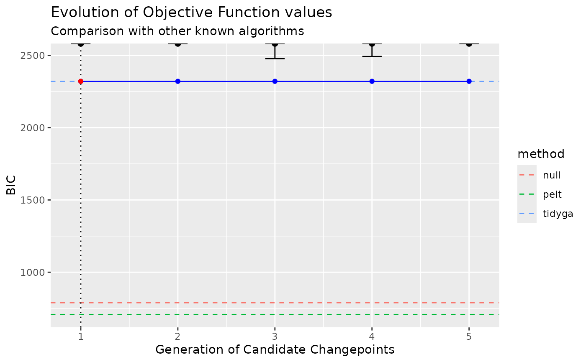

Segment a time series using a genetic algorithm
segment_ga.RdSegmenting functions for various genetic algorithms
Usage
segment_ga(
x,
model_fn = fit_meanshift_norm,
penalty_fn = BIC,
model_fn_args = list(),
...
)
segment_ga_shi(x, ...)
segment_ga_coen(x, ...)
segment_ga_random(x, ...)Arguments
- x
A time series
- model_fn
A
characterornamecoercible into a fun_cpt function. See, for example,fit_meanshift_norm().- penalty_fn
A function that evaluates the changepoint set returned by
model_fn. We provideAIC(),BIC(),MBIC(),MDL(), andBMDL().- model_fn_args
A
list()of parameters passed tomodel_fn- ...
arguments passed to
GA::ga()
Value
A tidyga object. This is just a GA::ga() object with an additional
slot for data (the original time series) and model_fn_args (captures
the model_fn and penalty_fn arguments).
Details
segment_ga() uses the genetic algorithm in GA::ga() to "evolve" a random
set of candidate changepoint sets, using the penalized objective function
specified by penalty_fn.
By default, the normal meanshift model is fit (see fit_meanshift_norm())
and the BIC penalty is applied.
segment_ga_shi(): Shi's algorithm is the algorithm used in doi:10.1175/JCLI-D-21-0489.1 . Note that in order to achieve the reported results you have to run the algorithm for a really long time. Pass the valuesmaxiter= 50000 andrun= 10000 toGA::ga()using the dots.
segment_ga_coen(): Coen's algorithm is the one used in doi:10.1007/978-3-031-47372-2_20 . Note that the speed of the algorithm is highly sensitive to the size of the changepoint sets under consideration, with large changepoint sets being slow. Consider setting thepopulationargument toGA::ga()to improve performance. Coen's algorithm uses thebuild_gabin_population()function for this purpose by default.
segment_ga_random(): Randomly select candidate changepoint sets. This is implemented as a genetic algorithm with only one generation (i.e.,maxiter = 1). Note that this function useslog_gabin_population()by default.
References
Shi, et al. (2022, doi:10.1175/JCLI-D-21-0489.1 )
Taimal, et al. (2023, doi:10.1007/978-3-031-47372-2_20 )
Examples
# Segment a time series using a genetic algorithm
res <- segment_ga(CET, maxiter = 5)
summary(res)
#> ── Genetic Algorithm ───────────────────
#>
#> GA settings:
#> Type = binary
#> Population size = 50
#> Number of generations = 5
#> Elitism = 2
#> Crossover probability = 0.8
#> Mutation probability = 0.1
#>
#> GA results:
#> Iterations = 5
#> Fitness function value = -2269.573
#> Solution =
#> x1 x2 x3 x4 x5 x6 x7 x8 x9 x10 ... x365 x366
#> [1,] 0 0 0 1 1 0 1 1 0 0 1 0
str(res)
#> Formal class 'tidyga' [package "tidychangepoint"] with 23 slots
#> ..@ data : Time-Series [1:366] from 1 to 366: 8.87 9.1 9.78 9.52 8.63 9.34 8.29 9.86 8.52 9.51 ...
#> ..@ model_fn_args:List of 2
#> .. ..$ model_fn : chr "meanshift_norm"
#> .. ..$ penalty_fn: chr "BIC"
#> ..@ call : language GA::ga(type = "binary", fitness = obj_fun, nBits = n, maxiter = 5)
#> ..@ type : chr "binary"
#> ..@ lower : logi NA
#> ..@ upper : logi NA
#> ..@ nBits : int 366
#> ..@ names : chr [1:366] "x1" "x2" "x3" "x4" ...
#> ..@ popSize : num 50
#> ..@ iter : int 5
#> ..@ run : int 5
#> ..@ maxiter : num 5
#> ..@ suggestions : logi[0 , 1:366]
#> ..@ population : num [1:50, 1:366] 1 0 1 0 0 0 1 0 0 0 ...
#> ..@ elitism : int 2
#> ..@ pcrossover : num 0.8
#> ..@ pmutation : num 0.1
#> ..@ optim : logi FALSE
#> ..@ fitness : num [1:50] -Inf -Inf -Inf -2421 -Inf ...
#> ..@ summary : num [1:5, 1:6] -2270 -2270 -2270 -2270 -2270 ...
#> .. ..- attr(*, "dimnames")=List of 2
#> .. .. ..$ : NULL
#> .. .. ..$ : chr [1:6] "max" "mean" "q3" "median" ...
#> ..@ bestSol : list()
#> ..@ fitnessValue : num -2270
#> ..@ solution : num [1, 1:366] 0 0 0 1 1 0 1 1 0 0 ...
#> .. ..- attr(*, "dimnames")=List of 2
#> .. .. ..$ : NULL
#> .. .. ..$ : chr [1:366] "x1" "x2" "x3" "x4" ...
plot(res)

# \donttest{
# Segment a time series using Shi's algorithm
x <- segment(CET, method = "ga-shi", maxiter = 5)
str(x)
#> List of 4
#> $ segmenter :Formal class 'tidyga' [package "tidychangepoint"] with 23 slots
#> .. ..@ data : Time-Series [1:366] from 1 to 366: 8.87 9.1 9.78 9.52 8.63 9.34 8.29 9.86 8.52 9.51 ...
#> .. ..@ model_fn_args:List of 2
#> .. .. ..$ model_fn : chr "meanshift_norm_ar1"
#> .. .. ..$ penalty_fn: chr "BIC"
#> .. ..@ call : language GA::ga(type = "binary", fitness = obj_fun, nBits = n, popSize = 200, maxiter = 5)
#> .. ..@ type : chr "binary"
#> .. ..@ lower : logi NA
#> .. ..@ upper : logi NA
#> .. ..@ nBits : int 366
#> .. ..@ names : chr [1:366] "x1" "x2" "x3" "x4" ...
#> .. ..@ popSize : num 200
#> .. ..@ iter : int 5
#> .. ..@ run : int 1
#> .. ..@ maxiter : num 5
#> .. ..@ suggestions : logi[0 , 1:366]
#> .. ..@ population : num [1:200, 1:366] 1 0 1 1 1 0 1 1 0 0 ...
#> .. ..@ elitism : int 10
#> .. ..@ pcrossover : num 0.8
#> .. ..@ pmutation : num 0.1
#> .. ..@ optim : logi FALSE
#> .. ..@ fitness : num [1:200] -Inf -2333 -Inf -Inf -Inf ...
#> .. ..@ summary : num [1:5, 1:6] -2283 -2233 -2197 -2197 -2183 ...
#> .. .. ..- attr(*, "dimnames")=List of 2
#> .. .. .. ..$ : NULL
#> .. .. .. ..$ : chr [1:6] "max" "mean" "q3" "median" ...
#> .. ..@ bestSol : list()
#> .. ..@ fitnessValue : num -2183
#> .. ..@ solution : num [1, 1:366] 0 1 1 0 0 0 0 0 0 0 ...
#> .. .. ..- attr(*, "dimnames")=List of 2
#> .. .. .. ..$ : NULL
#> .. .. .. ..$ : chr [1:366] "x1" "x2" "x3" "x4" ...
#> $ model :List of 7
#> ..$ data : Time-Series [1:366] from 1 to 366: 8.87 9.1 9.78 9.52 8.63 9.34 8.29 9.86 8.52 9.51 ...
#> ..$ tau : int [1:151] 2 3 14 16 17 18 21 23 24 25 ...
#> ..$ region_params: tibble [152 × 2] (S3: tbl_df/tbl/data.frame)
#> .. ..$ region : chr [1:152] "[1,2)" "[2,3)" "[3,14)" "[14,16)" ...
#> .. ..$ param_mu: num [1:152] 8.87 9.1 9.14 8.6 8.12 ...
#> ..$ model_params : Named num [1:2] 0.167 -0.207
#> .. ..- attr(*, "names")= chr [1:2] "sigma_hatsq" "phi_hat"
#> ..$ fitted_values: num [1:366] 8.87 9.1 9.14 9 9.06 ...
#> ..$ model_name : chr "meanshift_norm_ar1"
#> ..$ durbin_watson: num 2.41
#> ..- attr(*, "class")= chr "mod_cpt"
#> $ elapsed_time: 'difftime' num 0.986014604568481
#> ..- attr(*, "units")= chr "secs"
#> $ time_index : Date[1:366], format: "1659-01-01" "1660-01-01" ...
#> - attr(*, "class")= chr "tidycpt"
# Segment a time series using Coen's algorithm
y <- segment(CET, method = "ga-coen", maxiter = 5)
#> Seeding initial population with probability: 0.0273224043715847
changepoints(y)
#> x153 x200 x296
#> 153 200 296
# Segment a time series using Coen's algorithm and an arbitrary threshold
z <- segment(CET, method = "ga-coen", maxiter = 5,
model_fn_args = list(threshold = 2))
#> Seeding initial population with probability: 0.0327868852459016
changepoints(z)
#> x62 x73 x94
#> 62 73 94
# }
if (FALSE) { # \dontrun{
# This will take a really long time!
x <- segment(CET, method = "ga-shi", maxiter = 500, run = 100)
changepoints(x)
# This will also take a really long time!
y <- segment(CET, method = "ga", model_fn = fit_lmshift, penalty_fn = BIC,
popSize = 200, maxiter = 5000, run = 1000,
model_fn_args = list(trends = TRUE),
population = build_gabin_population(CET)
)
} # }
if (FALSE) { # \dontrun{
x <- segment(method = "ga-coen", maxiter = 50)
} # }
x <- segment(CET, method = "random")
#> Seeding initial population with probability: 0.0161274134792387